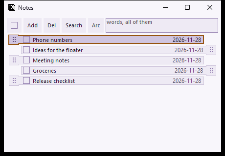
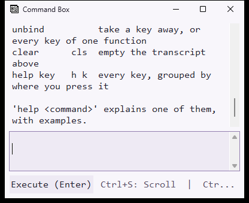
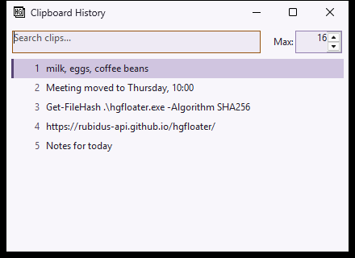
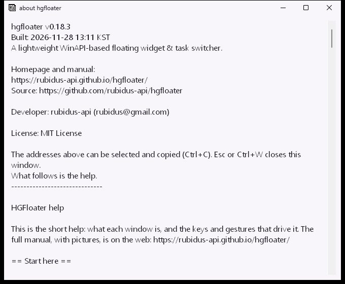

아이콘 하나에 창 하나, 아이콘 하나에 키 하나
창을 넷 연 프로그램은 아이콘도 넷입니다. 창은 Shift + 0~9, 단축 아이콘은 Shift + A~Z를 쓰므로 창이 열리고 닫혀도 키가 바뀌지 않습니다. 아이콘을 가리키면 바탕화면에서 그 창의 윤곽이 보이고, 브라우저 · 탐색기 · 터미널의 탭도 따로 아이콘이 될 수 있습니다.
태스크박스창과 프로그램과 컨트롤을 작은 상자 하나에
시계는 어느 모니터든, 작업 표시줄 위든 놓아 둔 자리에 떠 있습니다. 클릭하거나 Win + Alt + Space를 누르면 격자가 펼쳐지고, 열린 창마다 아이콘 하나, 모아 둔 단축 아이콘마다 아이콘 하나, 그리고 소리 · 화면 · 노트 · 클립보드 버튼이 나옵니다. 아이콘마다 키가 있어서 네 번째 창은 언제나 Shift + 3입니다.
서명이 없는 파일입니다. 릴리스마다 SHA-256을 적어 두니, 실행하기 전에 Get-FileHash로 확인할 수 있습니다.

창을 넷 연 프로그램은 아이콘도 넷입니다. 창은 Shift + 0~9, 단축 아이콘은 Shift + A~Z를 쓰므로 창이 열리고 닫혀도 키가 바뀌지 않습니다. 아이콘을 가리키면 바탕화면에서 그 창의 윤곽이 보이고, 브라우저 · 탐색기 · 터미널의 탭도 따로 아이콘이 될 수 있습니다.
태스크박스단축 아이콘 폴더에 .lnk를 넣으면 1초 안에 아이콘이 생기고, 이름을 바꾸면 순서가 바뀝니다. 폴더를 가리키는 바로 가기는 격자를 채우지 않고 따로 Dir 목록으로 갑니다.
격자의 단축 아이콘Vol, Mon, Alp이 값을 게이지로 보이고 휠로 바뀝니다. A/V 제어 센터에서 오디오 장치, Win + P 화면 배치, 배율, 해상도, 그리고 DDC/CI나 노트북 백라이트로 실제 모니터 밝기를 바꿉니다.
A/V 제어 센터노트는 어디서나 열 수 있는 평범한 .txt 파일이고, 검색 · 보관 · 끌어서 순서 바꾸기가 됩니다. 클립보드 히스토리는 텍스트를 메모리에만 두고 디스크에 쓰지 않습니다.
노트go 1은 창에 포커스를 주고, move 1 100 100 2는 창을 2번 디스플레이로 옮기고, find windows 낱말은 제목을 찾습니다. 같은 상자에서 노트를 열고, 클립을 꺼내고, 어떤 설정이나 키든 바꿉니다.
커맨드 박스설치 과정도, 서비스도, 로그도, 네트워크 접속도 없습니다. 설정은 평범한 config.ini 하나, 노트는 그 옆의 텍스트 파일이고, 레지스트리에 쓰는 값은 켰을 때의 Start with Windows 항목 하나뿐입니다.
파일과 디렉터리윈도우 11 가상 머신에서 2026-11-28에 v0.18.3을 기본 inanis 색으로 찍은 화면이고, 단축 아이콘과 노트는 보기로 넣은 것입니다. 그림을 누르면 원래 크기로 보입니다.






모든 동작에 마우스 조작과 함께 키가 있고, 기능을 부르는 키는 설정 창에서 바꿀 수 있습니다.
| Win + Alt + Space | 어디서나 태스크박스를 보이고 숨기기 |
| Shift + 0 … 9 | 그 배지의 창 |
| Shift + A … Z | 그 배지의 단축 아이콘 |
| 방향키 / WASD | 아이콘 사이를 오가기 |
| C, N, Ctrl + L, Ctrl + O | 커맨드 박스, 노트, 클립보드 히스토리, A/V 제어 센터 |
| Ctrl + , | 설정 창 |
| F1 | 내장 도움말 |
| Ctrl + Q | 끝내기 |
모든 창, 키, 명령, 설정을 영어와 한국어로 담았습니다. 여기서 읽거나, 릴리스에 첨부한 PDF나 HTML 판을 내려받을 수 있습니다.